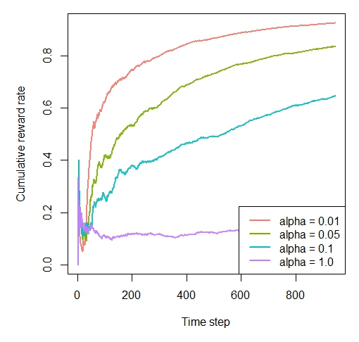

vignettes/cmabsoffline.Rmd
cmabsoffline.Rmdlibrary(contextual)
library(data.table)
# Import personalization data-set
url <- "http://d1ie9wlkzugsxr.cloudfront.net/data_cmab_basic/dataset.txt"
datafile <- fread(url)
# Clean up datafile
datafile[, context := as.list(as.data.frame(t(datafile[, 3:102])))]
datafile[, (3:102) := NULL]
datafile[, t := .I]
datafile[, sim := 1]
datafile[, agent := "linucb"]
setnames(datafile, c("V1", "V2"), c("choice", "reward"))
# Set simulation parameters.
simulations <- 1
horizon <- nrow(datafile)
# Initiate Replay bandit with 10 arms and 100 context dimensions
log_S <- datafile
bandit <- OfflineReplayEvaluatorBandit$new(log_S, k = 10, d = 100)
# Define agents.
agents <-
list(Agent$new(LinUCBDisjointOptimizedPolicy$new(0.01), bandit, "alpha = 0.01"),
Agent$new(LinUCBDisjointOptimizedPolicy$new(0.05), bandit, "alpha = 0.05"),
Agent$new(LinUCBDisjointOptimizedPolicy$new(0.1), bandit, "alpha = 0.1"),
Agent$new(LinUCBDisjointOptimizedPolicy$new(1.0), bandit, "alpha = 1.0"))
# Initialize the simulation.
simulation <-
Simulator$new(
agents = agents,
simulations = simulations,
horizon = horizon,
save_context = TRUE,
reindex = TRUE
)
# Run the simulation.
linucb_sim <- simulation$run()
# plot the results
plot(linucb_sim, type = "cumulative", regret = FALSE,
rate = TRUE, legend_position = "bottomright")